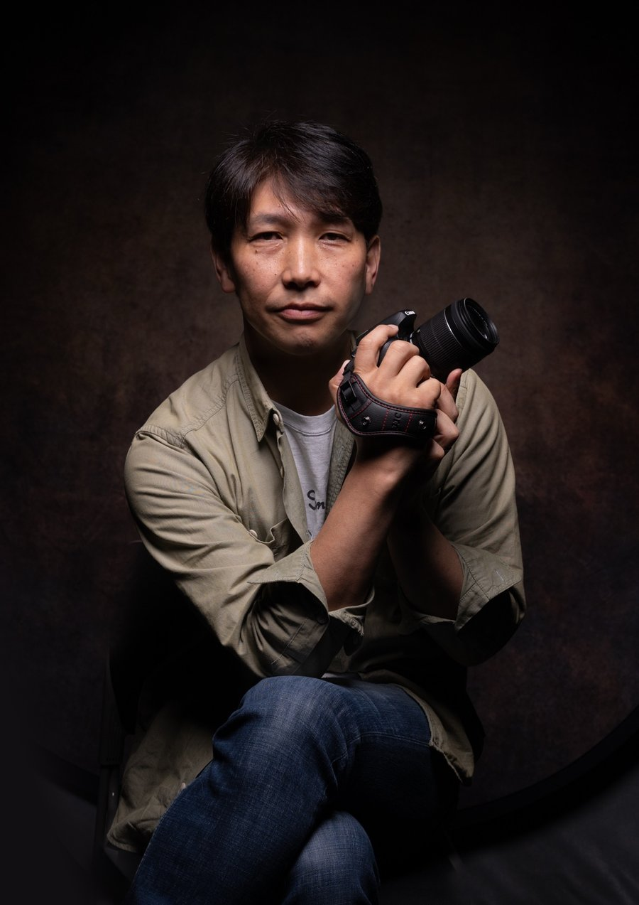

Who is Syukoc
syukoc.Bi-LUME
Culinary Visual Artist / Bi-LUME Creator
奥村 昌弘
Based in Nagoya, Aichi Prefecture, central Japan.
名古屋を拠点に活動。
Award-winning photographer recognized by international photo awards.
世界各国のフォトアワードにて受賞歴あり。
消えゆく傑作に、光の永遠を。名古屋を拠点に、飲食店・和菓子店・食品ブランドの料理写真を撮影しています。
On 1X
100 works published on 1X.com, a curated platform for fine-art photography.
Silent Tea ／ Cubes in Muted Light（100th Work）／ Braided Crust in Shadow ／ Duality in Glaze ／ The Quiet Table
Awards & Publications（主な受賞・実績）
- FPA Professional Food Photography Award 2023Bronze Winner
- MUSE Photography Awards 2024Gold Winner
- European Photography Awards 2024Gold Winner
- Global Photography Awards 2024Silver Winner
- reFocus Awards 2024 World Photo Annual — Advertising & Commercial, Photographer of the Year ／ People's Choice AwardSilver
- 1839 Awards 2025 Still LifeSilver Award
- London Photography Awards 2025Gold Winner
- European Photography Awards 2025Gold Winner
- Global Photography Awards 2025Silver Winner
- Global Lens Awards 2026 Advertising Photography — Food & BeverageSecond Place
FPA Winners Exhibition 出展
KADOKAWA 出版書籍 スタイリング・撮影担当
Selected Clients（主なお取引先）
株式会社オー・デリス・ドゥ・シバタ ／ 株式会社KADOKAWA ／ 株式会社ラブピ ／ ほか
Contact
撮影のご相談は
公式LINEから
まずは公式LINEで、撮影したい商品とご希望の時期をお送りください
内容を確認して、こちらからご返信します
LINEをご利用でない方は、メールまたはお問い合わせフォームからご連絡ください